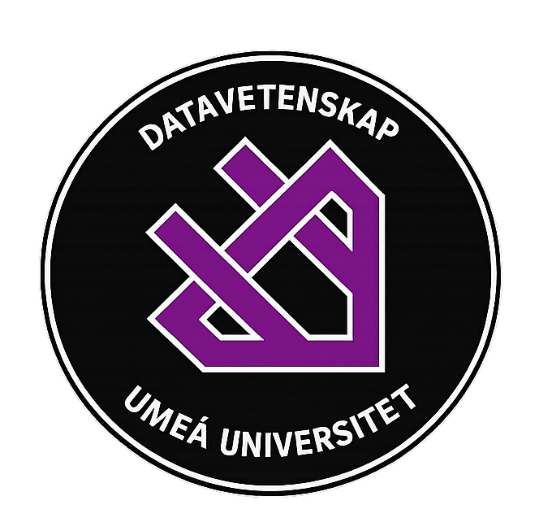

I am a driven Computer Science student at Umeå University with a strong interest in Artificial Intelligence and Cybersecurity. So far, my education has provided a solid technical foundation in backend development using C, Java, and Python, which perfectly suits my passion for complex problem-solving. I am a strong believer in 'learning by doing' and am currently looking for practical experiences to further my skills. My goal is a role where I can combine my technical expertise with social interaction, working closely with both colleagues and clients.
Umeå University | [2024 - present]
A highly technical program where we frequently build systems from scratch. Through the courses I have completed so far, I have gained extensive hands-on experience developing in C, Java, and Python. The curriculum heavily emphasizes memory management, complex problem-solving, and writing efficient code. Moving forward, I plan to focus my elective coursework on artificial intelligence and cybersecurity.

Umeå University | [2025 - 2026]
Elected representative for the BSc in Computer Science on the student division board, acting as the primary link between students and the academic program.
Umeå University | [2025]
Leadership role dedicated to welcoming and onboarding exchange students to university life
Programming languages, frameworks, tools, etc...
Some of the projects i've worked on, what they are about, what technologies i used, etc...
Contact info, email, phone nr, etc